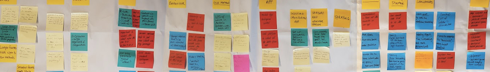

FarmApp
Brief
FarmApp is an end to end solution for Integrated Pest Management (IPM). It’s a software based solution designed to assist farmers with crop management which in turn allows for better forecasting and decision making. As a new business they needed some help on two main areas;
- Attracting new customers.
- Better communicate their solution to potential clients, particularly via the website.
Research
What FarmApp said
The first step was to sit down with the FarmApp team and get as much information from them as posssible. Some of the key challenges were;
- Farmers often being time-poor.
- Current sales method time-consuming
- Some resistance to change & new tech (pride and tradition). Some resistance to share data / info with others.
- Competition from pesticide companies -(scouting & agronomy).
- Higher cost of labour in Aust (scouting).
- Finding the types of farms that would be most receptive to FarmApp.

What the Stats said
Our next step was to do some general research on farming in order to better familliarize with the situation here and to better equip up for the our next step.Here’s what we found out.

What the Farmers said
Unable to get in contact with FarmApps current users, we spoke to ten farmers who were potential FarmApp customers.They were;
- Eight farmers in Australia, one in New Zealand and one in Taiwan.
- Farms ranged from 5ha to 600ha.
- Farming a variety of products (grains, grapes, almonds, peas, potatoes, flowers, nursery plants, olives and organic vegetables)
Key Findings: Attitudes
- Farming is a labour of love or more pragmatic and profit
driven. -
Range of attitudes around new technology:
- actively using
- curious, but not proactive
- wedded to tradition
- Two farms about to be handed over to the next generation
both indicated new tech was up to their sons.

Key Findings: Challenges
- All said TIME was precious
- Climate (drought)
- Water costs
- Uncertainty
- Profitability
- Barriers for new tech
- Time required to seek out & test new methods
- Poor Internet service
- Older generation having less patience and interest to
learn new technology

Key Findings: Info Sources and Methods
-
Common sources:
- neighbouring farmers and friends
- generational knowledge
- interest groups / associations
- sellers of products (though sceptical)
- media (particularly special-interest)
- FarmApp impression - “Farmers don’t like to share” doesn’t paint the full picture
- Generally willing to share information with each other, but some limits around WHAT they share

Synthesis and Ideation
Based on our research we were able to produce a flow of the Farmers Journey, the FarmApp Journey, and develop a FarmApp Customer Journey.


Based on this we were able to come up with a Problem Statement/Hypothesis;
"FarmApp needs to respond to customer diversity more strategically to deliver the right message to the right person at the right time."